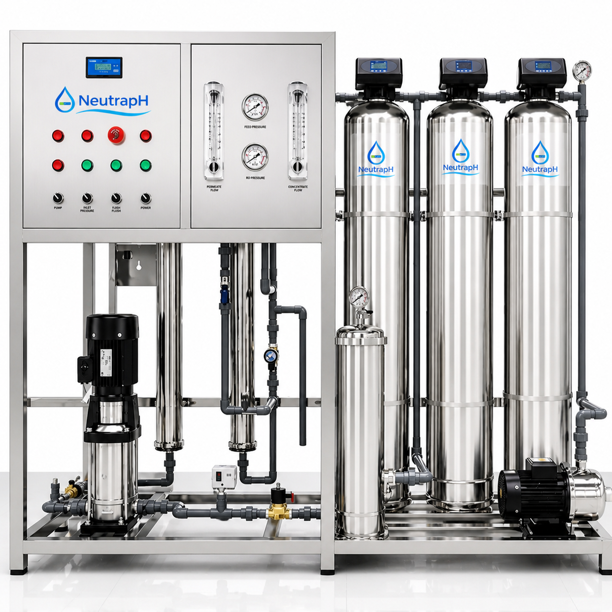

Water Purification
We use reverse osmosis to purify high-salinity borehole water into safer, better-tasting drinking water.
RO Process
Built for reliable clean water
NeutrapH uses a practical reverse osmosis process to improve water quality, taste and safety for local customers.
- Removes dirt, sand and suspended particles
- Reduces chlorine, bad taste and odour
- Removes dissolved salts and common impurities
- Final UV treatment helps improve microbial safety
